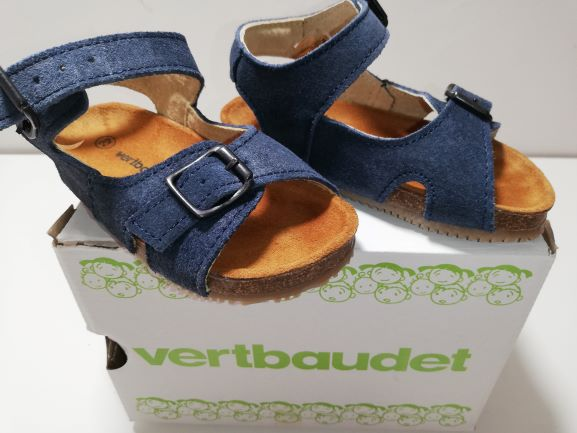
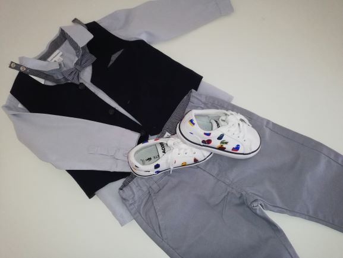
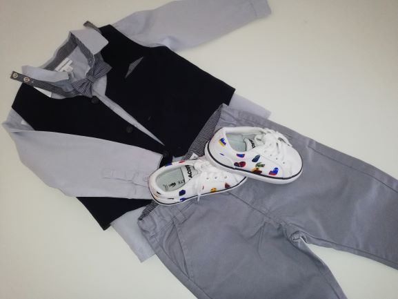

These sandals I bought at vertbaudet, You can find pretty good sales there but you have to act fast since a lot of these promotions won’t last long.
kids fashion
When shopping for my kids, i always like to look for unique items. Sometimes it can be expensive, but most of the time that’s not the case. I usually mix them together. you’ll be suprised how well it works. I’ll be posting some of my ideas and mixes with name brands
 
